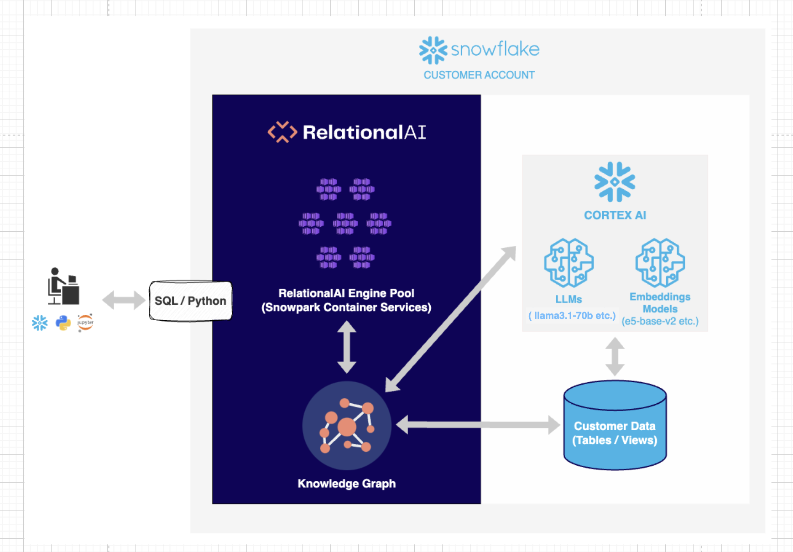
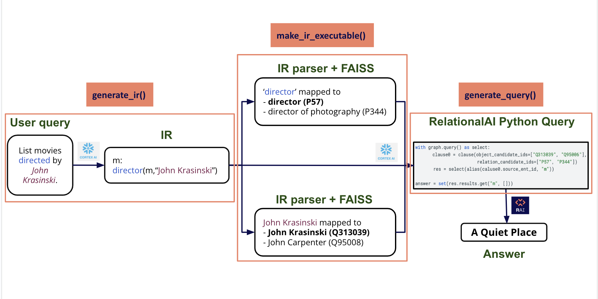
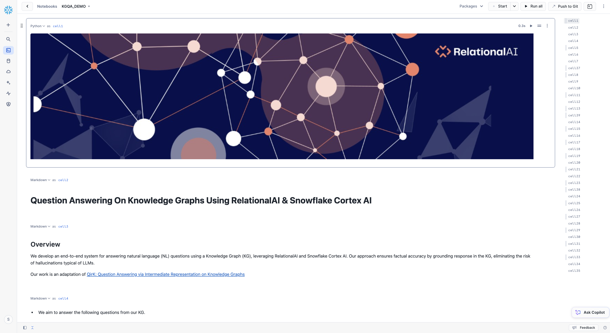

Knowledge graphs are a useful structure to use to encode information about a particular domain. They allow for explicit inspection of the data encoded and the ability to reason over the relations. However, writing a query against a knowledge graph can be more challenging than other systems given that they generally lack a natural language interface. In order to query over a knowledge graph such as the one created by Wikidata, the user must know the specialized syntax of SPARQL as well as the knowledge graph representation of the entities and relations. For example, the concept of a hospital in wikidata is represented internally as Q16917.
In this quickstart, we will create a Snowflake service using Snowpark Container Services ( SPCS ), Snowflake's LLM service provided by their Cortex AI product and RelationalAI, a Knowledge Graph Coprocessor embedded inside of Snowflake, to allow a user to ask the following questions on a subset of Wikidata:
This work is a partial reimplementation of the QirK: Question Answering via Intermediate Representation on Knowledge Graphs paper. The implementation of the paper can be found here.
RelationalAI is a cloud-native platform that enables organizations to streamline and enhance decisions with intelligence. RelationalAI extends Snowflake with native support for an expanding set of AI workloads (e.g., graph analytics, rule-based reasoning, and optimization), all within your Snowflake account, offering the same ease of use, scalability, security, and governance.
Users can build a knowledge graph using Python and materialize it on top of their Snowflake data, which are shared with the RelationalAI app through Snowflake Streams. Insights can be written to Snowflake tables and shared across the organization.
In our case, we will utilize RelationalAI's Native App to construct an executable Knowledge graph over a subset of Wikidata to answer natural language queries.
ACCOUNTADMIN and KGQA_PUBLIC access 
Users may already have their data in Snowflake. RelationalAI runs within the user's Snowflake account, creating a graph index over the Snowflake tables. This allows a user to create a RelationalAI model in python. This model can be interpreted as an executable Knowledge Graph. When a user asks a natural language question, the system generates a RelationalAI Python query that is then executed and retrieves the relevant answers to the user. Our system is hosted on a Snowpark Container, and uses Snowflake's Cortex AI. In summary, our solution leverages data in Snowflake tables, CortexAI to translate natural language to queries, and RelationalAI's Native App to construct an executable Knowledge graph that answers these queries.

Note that everything runs securely in the user's Snowflake account on snowpark container services. Given that at the end we are executing a query on a Knowledge Graph, the answer is guaranteed to exist in our dataset, otherwise nothing will be returned.
Follow the below steps to launch End-to-End Demo Setup.
NOTE: User's Role permissions
Users should have access to role "kgqa_public" in their snowflake account, which has ownership and usage access similar to "accountadmin". Follows ths steps mentioned here to create a new role.
Here, <your_project_repository> is the path to the local directory where <git_repo> has been cloned.
export SETUP_PATH="<your_project_directory>/kgqa_demo/kgqa_demo_setup"
cd $SETUP_PATH
NOTE: Anything prefixed with ‘temp_' can be customized by the user, along with Snowflake ‘account' and ‘sf_login_email'.
Everything else should remain unchanged.
Execute the below sf_db_initialization script to produce SQL File to load and populate the Database and Tables in Snowflake ( copy-paste on Snowflake SQL Worksheet and Run)
python3 $SETUP_PATH/setup.py --config $SETUP_PATH/config.json --output_dir $SETUP_PATH/ sf_db_initialization
This step will automatically download triplets and labels files from AWS S3 Bucket and load the data in Snowflake.
NOTE: To execute SQL commands in Snowflake Worksheet, you first need to select a database. Initially, this could be any database. Later in the script, you will create a custom database and switch to it for subsequent commands.
An Image Repository in Snowflake is a storage location where you can store and manage container images. These images are like snapshots of applications and their environments, which can be run on Snowflake's platform.
Execute the below create_image_repo script to produce SQL File to create Image Repository on Snowflake ( copy-paste on Snowflake SQL Worksheet and Run)
python3 $SETUP_PATH/setup.py --config $SETUP_PATH/config.json --output_dir $SETUP_PATH/ create_image_repo
Execute the below build_push_docker_image script to push docker image to Snowflake's Image Repository.
python3 $SETUP_PATH/setup.py --config $SETUP_PATH/config.json --output_dir $SETUP_PATH/ build_push_docker_image --option push_only=True
Execute the below create_service script to produce SQL File to create Snowflake Service ( copy-paste on Snowflake SQL Worksheet and RUN)
python3 $SETUP_PATH/setup.py --config $SETUP_PATH/config.json --output_dir $SETUP_PATH/ create_service
NOTE: After running the "CREATE SERVICE .." command in SF Worksheet, wait for the service to get Status="READY" ( takes around 3-4 minutes ) before creating the UDFs and testing them in the below Worksheet.
Now, we are all set to run the Demo notebook!
USE ROLE ACCOUNTADMIN;
CREATE OR REPLACE API INTEGRATION git_api_integration
API_PROVIDER = git_https_api
API_ALLOWED_PREFIXES = ('https://github.com/RelationalAI')
ENABLED = TRUE;
kgqa_demo->kgqa_demo.ipynb.relationalai.zip file, as specified in the instructions, in the same directory as kgqa_demo.ipynb within Snowflake.Run the KGQA Demo Notebook in Snowflake to play with our pipeline!

Follow the below steps to launch End-to-End pipeline as a Service on Snowflake and interact with it.
Here, <your_project_repository> is the path to the local directory where <git_repo> has been cloned.
export SETUP_PATH="<your_project_directory>/kgqa_demo/kgqa_demo_setup"
cd <your_project_directory>/kgqa_docker/
NOTE: Anything prefixed with ‘temp_' can be customized by the user, along with Snowflake ‘account' and ‘sf_login_email'.
Everything else should remain unchanged.
Execute the below sf_db_initialization script to produce SQL File to load and populate the Database and Tables in Snowflake ( copy-paste on Snowflake SQL Worksheet and Run)
NOTE:
python3 $SETUP_PATH/setup.py --config $SETUP_PATH/config.json --output_dir $SETUP_PATH/ sf_db_initialization
An Image Repository in Snowflake is a storage location where you can store and manage container images. These images are like snapshots of applications and their environments, which can be run on Snowflake's platform.
Execute the below create_image_repo script to produce SQL File to create Image Repository on Snowflake ( copy-paste on Snowflake SQL Worksheet and Run)
python3 $SETUP_PATH/setup.py --config $SETUP_PATH/config.json --output_dir $SETUP_PATH/ create_image_repo
The Similarity Search using FAISS relies on index files to find the best matching results. These index files must be included in the container image for the search to function properly.
Execute the below generate_embeddings script to create the index files
python3 $SETUP_PATH/setup.py --config $SETUP_PATH/config.json --output_dir $SETUP_PATH/ generate_embeddings --option model="e5-base-v2"
Execute the below build_push_docker_image script to push docker image to Snowflake's Image Repository.
python3 $SETUP_PATH/setup.py --config $SETUP_PATH/config.json --output_dir $SETUP_PATH/ build_push_docker_image
Execute the below create_service script to produce SQL File to create Snowflake Service ( copy-paste on Snowflake SQL Worksheet and RUN)
python3 $SETUP_PATH/setup.py --config $SETUP_PATH/config.json --output_dir $SETUP_PATH/ create_service
NOTE: After running the "CREATE SERVICE .." command in SF Worksheet, wait for the service to get Status="READY" ( takes around 3-4 minutes ) before creating the UDFs and testing them in the below Worksheet.
In case you encounter any of the following issues, please follow the recommended steps:
If you started/resumed the tasks as part of the Data Engineering or Data Resources sections, then it is important that you run the following commands to suspend those tasks in order to avoid unecessary resource utilization. Be sure to update the values below as specified in the config
SQL Commands to delete Snowflake Objects
--delete service
drop service temp_kgqa_service;
-- delete database
drop database temp_db;
-- delete compute pool
drop compute pool temp_cp;
-- delete warehouse
drop warehouse temp_wh;
Congratulations on completing the our Question and Answering on Knowledge Graphs using RelationalAI and Snowflake guide! In this Quickstart you learned
– To see all images
docker images
– To drop an image using image_id ( the docker images command will give the image ID )
docker rmi -f <image_id>
– To drop an image using repository name ( the docker images command will give the Repository Name )
docker rmi <repo_name>
– Login to the container and run through container terminal
docker run --platform linux/amd64 -p 8000:8000 <account_name>.registry.snowflakecomputing.com/<db_name>/<schema_name>/<image_repo_name>/<image_name>
– Login to the container and Run from inside the container
docker run -it <account_name>.registry.snowflakecomputing.com/<db_name>/<schema_name>/<image_repo_name>/<image_name> /bin/bash